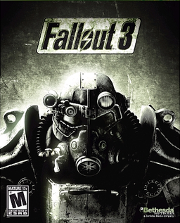
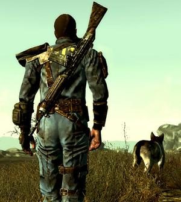
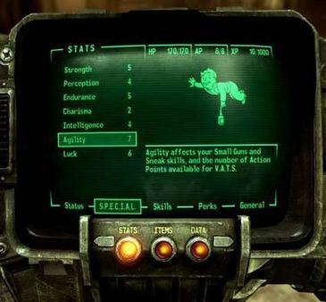
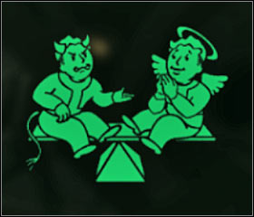
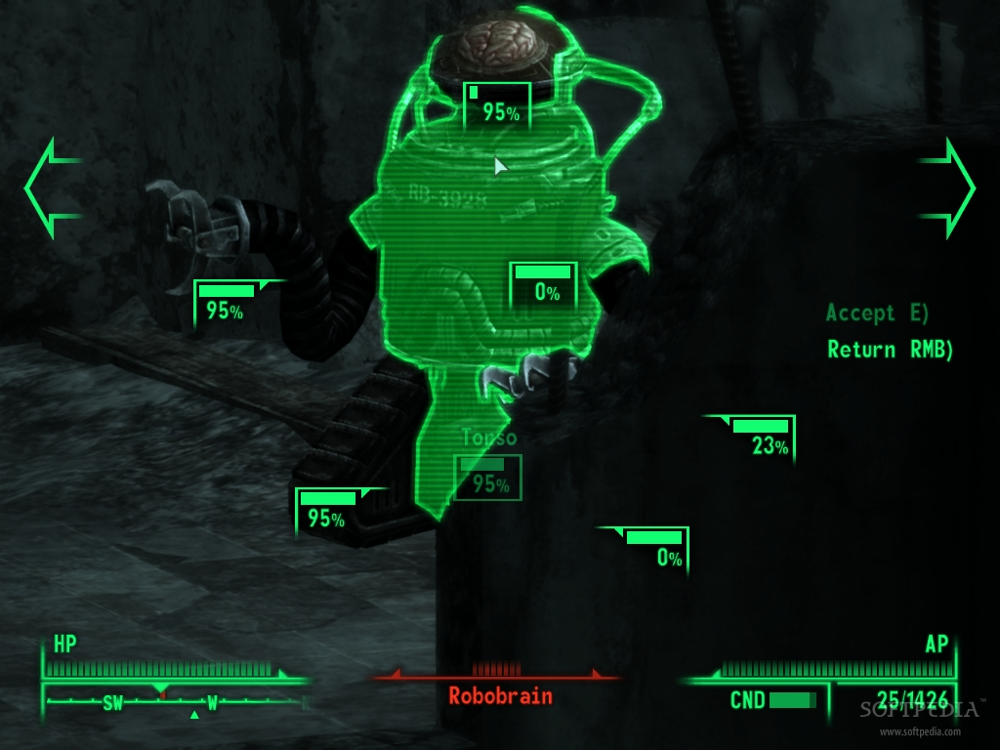
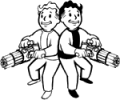

Fallout 3 is an action role-playing game released by Bethesda Game Studios, and is the third major installment in the Fallout series.
Below is a general overview of the range of attributes you can apply during gameplay.
Skills and Perks are similar to those in previous games: Skills can be gradually assigned and give players increasing degrees of ability; for instance, increasing the lock pick skill grants the player the ability to pick harder locks to unlock doors and supply crates. With each level, the player can allocate more points to their skills and a new Perk, some requiring specific stat levels or karma levels, each offering advantages of varying quality and form.
ATTRIBUTES
The player determines the race, the gender, and the general appearance of their character. As a one year-old baby, they read a child's book titled 'You're SPECIAL', where upon reading the player can set the character's primary attributes. Finally, at age 16, the player takes the G.O.A.T. exam to determine the first three Skills they wish to focus on.Skills and Perks are similar to those in previous games: Skills can be gradually assigned and give players increasing degrees of ability; for instance, increasing the lock pick skill grants the player the ability to pick harder locks to unlock doors and supply crates. With each level, the player can allocate more points to their skills and a new Perk, some requiring specific stat levels or karma levels, each offering advantages of varying quality and form.
This section describes various effects of karma in the game
KARMA
Another important statistic tracked in the game is karma. Each character has an aggregate amount of karma which can be affected by the decisions and actions made in the game. Positive karma actions include freeing captives and helping others. Negative karma actions include killing good characters and stealing. Beyond acting as flavor for the game's events, karma can have tangible effects to the player, primarily affecting the game's ending. Other effects include altered dialogue with non-player characters (NPCs), or unique reactions from other characters. Actions vary in levels of karma; pickpocketing produces less negative karma than the killing of a good character. The player's relationships with the game's factions are distinct, so any two groups or settlements may view the player in contrasting ways, depending on the player's conduct.
The Vault-Tec Assisted Targeting System, or V.A.T.S., plays an important part in combat.
V.A.T.S
While using V.A.T.S., real-time combat is paused, and action is played out from varying camera angles in a computer graphics version of "bullet time", creating a combat system that the Bethesda developers have described as a hybrid between turn-based and real-time combat. Various actions cost action points, limiting the actions of each combatant during a turn, and the player can target specific body areas for attacks to inflict specific injuries; head shots can be used for quick kills or blinding, legs can be targeted to slow enemies' movements, opponents can be disarmed by shooting at their weapons, and players can drive certain enemies into a berserker rage by shooting out things like antennae on various overgrown insects and combat inhibitors on armored robots. However, the use of V.A.T.S. also eliminates most of the first-person shooter elements of the game; aiming is taken over by the computer, and the player is unable to move as a means of avoiding attacks.
This section covers the companions a player can have during gameplay.